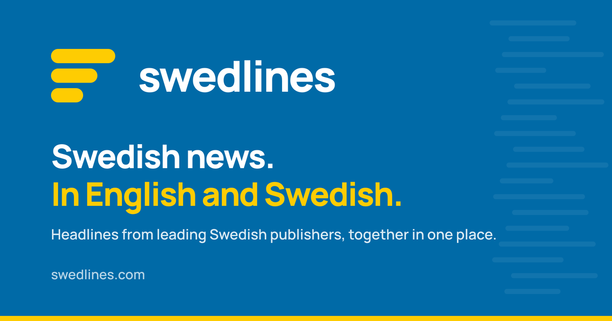
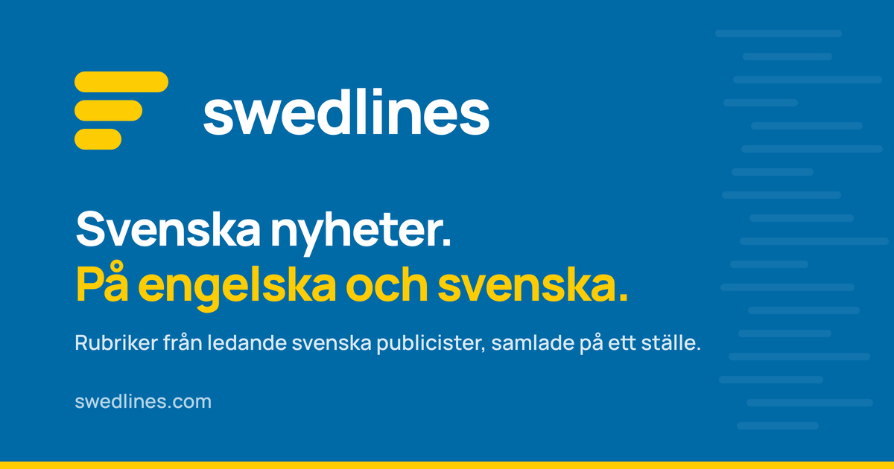

About Swedlines
Swedlines is an independent personal project. It brings together headlines from a selected set of Swedish news publishers and shows them in English and Swedish, so that people who do not read Swedish can follow what is in the Swedish news.
How it works
Every 15 minutes Swedlines reads the public RSS feeds of the publishers listed below and stores the headline, a short teaser and the link. English headlines are machine-translated by a language model and may contain errors, odd phrasing or mistranslated names. The Swedish original is always available; the “Both” view shows them side by side.
Swedlines links to the original reporting. It does not provide full translated articles, does not copy article text, and does not bypass paywalls. Some publishers require a subscription for some or all articles; that is noted in the list below.
Accuracy and responsibility
Swedlines does not write, verify or edit the news. Headlines and teasers are shown as each publisher published them, and the English versions are automatic translations that may contain errors. Swedlines is not responsible for the accuracy of the headlines or of the articles they point to. For the full and authoritative story, always follow the link to the publisher’s original article. If a headline looks wrong, use the “Report translation issue” link or email us.
Publishers
Publishers are chosen by hand to combine widely read national news sites, the public-service broadcasters, the quality dailies, a business daily and two regional papers. Each must offer a public RSS feed. The current list, generated from the site configuration:
- SVT Nyheter
- Sveriges Radio Ekot
- Dagens Nyheter (most articles require a subscription)
- Svenska Dagbladet (most articles require a subscription)
- Aftonbladet (some articles require a subscription)
- Expressen (some articles require a subscription)
- TV4 Nyheterna
- Dagens industri (most articles require a subscription)
- Göteborgs-Posten (most articles require a subscription)
- Sydsvenskan (most articles require a subscription)
Headlines and teasers belong to their publishers. Publisher names and logos are used only to identify the source of each headline.
Support
Swedlines is free to use. Hosting and machine translation cost money, and optional one-time or monthly contributions through Ko-fi help cover those costs. Nothing on the site is gated behind support.
Contact
Questions, corrections or a publisher request: swedlines@gmail.com. To report a mistranslated headline, use the “Report translation issue” link shown next to each headline in the “Both” view; it prepares an email with the article details.

Om Swedlines
Swedlines är ett fristående personligt projekt. Det samlar rubriker från ett urval svenska nyhetspublicister och visar dem på engelska och svenska, så att den som inte läser svenska ändå kan följa vad som står i svenska nyheter.
Så fungerar det
Var 15:e minut läser Swedlines de publika RSS-flödena från publicisterna nedan och sparar rubrik, en kort ingress och länken. Engelska rubriker maskinöversätts av en språkmodell och kan innehålla fel, konstiga formuleringar eller felöversatta namn. Det svenska originalet finns alltid kvar; läget ”Båda” visar dem sida vid sida.
Swedlines länkar till originalrapporteringen. Vi tillhandahåller inga fullständiga översatta artiklar, kopierar ingen artikeltext och kringgår inga betalväggar. Vissa publicister kräver prenumeration för en del eller alla artiklar; det anges i listan nedan.
Korrekthet och ansvar
Swedlines skriver, granskar eller redigerar inte nyheterna. Rubriker och ingresser visas som respektive publicist publicerade dem, och de engelska versionerna är automatiska översättningar som kan innehålla fel. Swedlines ansvarar inte för att rubrikerna eller artiklarna de leder till är korrekta. För den fullständiga och tillförlitliga nyheten, följ alltid länken till publicistens originalartikel. Om en rubrik ser fel ut, använd länken ”Rapportera översättningsfel” eller mejla oss.
Publicister
Publicisterna väljs för hand för att kombinera välbesökta rikstäckande nyhetssajter, public service, kvalitetsdagstidningarna, en affärstidning och två regionala tidningar. Alla måste ha ett publikt RSS-flöde. Aktuell lista, genererad från sajtens konfiguration:
- SVT Nyheter
- Sveriges Radio Ekot
- Dagens Nyheter (de flesta artiklar kräver prenumeration)
- Svenska Dagbladet (de flesta artiklar kräver prenumeration)
- Aftonbladet (vissa artiklar kräver prenumeration)
- Expressen (vissa artiklar kräver prenumeration)
- TV4 Nyheterna
- Dagens industri (de flesta artiklar kräver prenumeration)
- Göteborgs-Posten (de flesta artiklar kräver prenumeration)
- Sydsvenskan (de flesta artiklar kräver prenumeration)
Rubriker och ingresser tillhör respektive publicist. Publicisternas namn används bara för att visa varifrån varje rubrik kommer.
Stöd
Swedlines är gratis att använda. Drift och maskinöversättning kostar pengar, och frivilliga engångs- eller månadsbidrag via Ko-fi hjälper till att täcka kostnaderna. Inget på sajten är låst bakom stöd.
Kontakt
Frågor, rättelser eller önskemål om publicister: swedlines@gmail.com. För att rapportera en felöversatt rubrik, använd länken ”Rapportera översättningsfel” som visas vid varje rubrik i läget ”Båda”; den förbereder ett mejl med artikelns uppgifter.